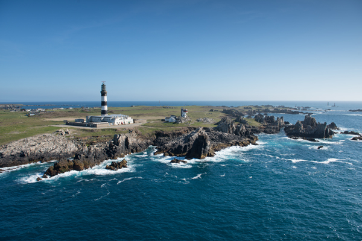

Qui sommes-nous ?

Après quelques temps sur Paris, nous avons fait le choix de nous installer loin de l'effervescence parisienne. Nous avons préféré continuer l'aventure sur cette île, au plus près des produits que nous utilisons dans notre spa, notre ferme marine étant juste à côté.
Notre établissement se situe sur une côte peu fréquentée, face au large. De la terrasse, on ne voit que les rochers découpés, la végétation naturelle et au-delà les vagues.
Nous avons voulu ce face-à-face avec la mer, ce choc avec les éléments.